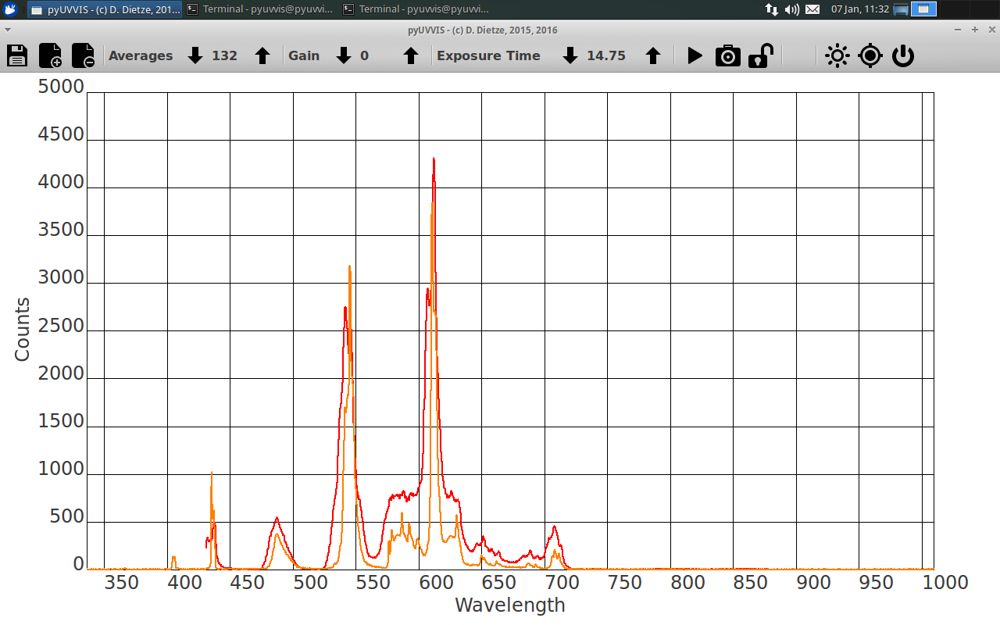

Calibration of home-built spectrometers¶
When you are using a home-built spectrometer with a CCD or CMOS detector, the camera returns just an array of intensities and gives no hint on the actual wavelength. Therefore, it is necessary to calibrate the spectrometer before use.
Calibration in pyUVVIS is handled in a simple but straightforward way:
- Record a calibration spectrum with a working spectrometer or use a gas lamp with tabulated lines (a fluorescent light bulb works fine).
- Record the same light source using pyUVVIS in spectrometer mode. The spectrum should be displayed versus pixel position.
- Open both files in your favorite data analysis app or simply plot both using python.
- Now select prominent spectral features from both spectra whose position is easily identifiable.
- Make a new file with two columns: the first column contains the pixel indices and the second column the actual wavelength of these features.
- Save this file as calibration.dat in the pyUVVIS main directory (where pyUVVIS.py is located).
- On the next start of pyUVVIS, it reads these calibration values and calculates the wavelength axis through a linear regression.
If you are not happy with the calibration, simply overwrite or delete calibration.dat.

{kind=link}
This image shows a comparison of spectra of a fluorescent lamp recorded with an OceanOptics USB2000 and my homebuilt uc480 spectrometer after calibration.